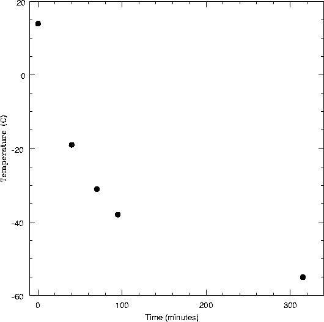

The NMSU 1m/LANL CCD Camera Page
Here is an image with the chip still warm (14C), mean counts = 16201 in a 1 sec exposure (dark column is overscan region) [
FITS
]:
Here is an image once the detector cooled to -54C, mean counts = 783 in a 1 sec exposure [
FITS
]:
Rate of Cooling after LN2 fill:

Close-up of CCD chip and mounting system:
Dewar on the "flow bench". Showing the loose cold strap (brown).